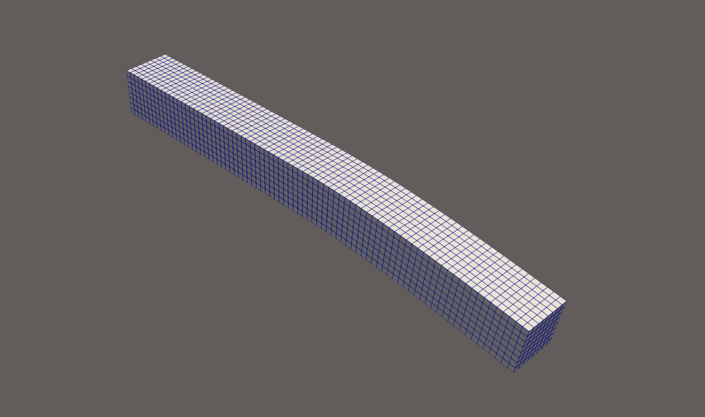

Tutorial: Building a Reduced-Order Model with scikit-rom

Goal. This comprehensive hands-on tutorial walks you through every file in problem_1 and shows how to assemble an affine reduced-order model (ROM) for a 3-D linear-elastic block using scikit-rom. We’ll explain the theory behind each step and demonstrate how reduced-order modeling can dramatically accelerate computational mechanics simulations.
What is Reduced-Order Modeling?
Reduced-order modeling (ROM) is a computational technique that creates fast approximations of high-fidelity numerical models. Instead of solving large systems of equations with millions of degrees of freedom, ROM constructs a low-dimensional representation that captures the essential physics while being orders of magnitude faster to evaluate.
The key insight is that many physical systems exhibit low-dimensional behavior even when discretized on fine meshes. By identifying the dominant modes of the system’s response through techniques like Proper Orthogonal Decomposition (POD), we can build efficient surrogate models that maintain high accuracy.
This is particularly powerful for:
Parameter studies: Exploring how a system responds to different material properties, boundary conditions, or geometry
Optimization: Finding optimal designs without expensive repeated full-scale simulations
Real-time applications: Control systems, digital twins, and interactive simulations
Uncertainty quantification: Monte Carlo studies with thousands of parameter samples
Prerequisites
First, install the required packages:
pip install scikit-rom scikit-fem numpy scipy matplotlibPackage Overview: - scikit-rom: The main ROM framework we’ll be using - scikit-fem: A Python finite element library for discretizing PDEs - numpy/scipy: Numerical computing foundations - matplotlib: For visualization and plotting results
You should also clone the project so that the package layout shown below is on your PYTHONPATH:
problem_1/
├─ domain.py # Geometry, mesh, and finite element setup
├─ bilinear_forms.py # Weak form implementation (stiffness matrix)
├─ linear_forms.py # Right-hand side terms (loads, tractions)
├─ properties.py # Material property definitions
├─ params.py # Parameter sampling for training/testing
└─ problem_def.py # Main problem class that orchestrates everythingThis modular structure separates concerns and makes the code maintainable and extensible.
1. Geometry & Finite-Element Setup — domain.py
The domain.py file constructs the physical domain, mesh, and finite-element bases. This is where we define the computational geometry and specify boundary conditions.
from skfem import MeshHex, Basis, ElementVector
def domain_(lx=1.0, ly=1.0, lz=1.0, factor=10, dirichlet_boundary_value=0.0):
mesh = MeshHex().refined(factor) * [lx, ly, lz]
element = ElementVector(ElementHex1())
basis = Basis(mesh, element)
# facet selectors (λ-functions that return True on selected facets)
left = basis.mesh.facets_satisfying(lambda x: x[0] < 1e-12)
right = basis.mesh.facets_satisfying(lambda x: x[0] > lx - 1e-12)
fbasis_dirichlet = basis.restrict(left)
fbasis_neumann = basis.restrict(right)
return dict(
mesh=mesh, basis=basis,
fbasis_dirichlet=fbasis_dirichlet,
fbasis_neumann=fbasis_neumann,
dirichlet_boundary_value=dirichlet_boundary_value
)Detailed Explanation:
Mesh Generation:
MeshHex().refined(factor)creates a structured hexahedral mesh. Thefactorparameter controls refinement level - higher values give finer meshes with more elements. The mesh is then scaled to dimensions[lx, ly, lz].Element Type:
ElementVector(ElementHex1())specifies vector-valued trilinear hexahedral elements. This is appropriate for 3D elasticity where each node has three displacement degrees of freedom (u_x, u_y, u_z).Basis Functions: The
Basisobject encapsulates the finite element space, combining the mesh topology with the element type to define shape functions and their derivatives.Boundary Identification: The lambda functions identify mesh facets (faces) on the left and right boundaries:
left: facets where x-coordinate is approximately 0 (fixed boundary)right: facets where x-coordinate is approximately lx (loaded boundary)
Boundary Bases:
fbasis_dirichletandfbasis_neumannare restricted function spaces on the boundary facets, used for applying boundary conditions.
Why This Structure? The helper returns a dictionary so that subsequent stages can be kept in pure-function style, making the code more modular and testable.
2. Constitutive Law & Material Properties — properties.py
This module defines the material behavior through elastic constants. We implement a simple inclusion model where part of the domain has different stiffness properties.
from skfem.models.elasticity import lame_parameters
def lame_params(E, nu, region):
lam, mu = lame_parameters(E, nu)
if region == "region_1": # stiffer inclusion
lam *= 50; mu *= 50
return lam, muDetailed Explanation:
- Lamé Parameters: In linear elasticity, material behavior is characterized by two independent elastic constants. The Lamé parameters (λ, μ) are mathematically convenient:
- λ (lambda): relates to bulk compression/expansion
- μ (mu): the shear modulus, relates to shape changes
- Conversion from Engineering Constants: The function
lame_parameters(E, nu)converts from the more intuitive engineering constants:- E: Young’s modulus (stiffness in uniaxial tension)
- ν: Poisson’s ratio (lateral contraction ratio)
- Material Heterogeneity: The
regionparameter allows for different material properties in different parts of the domain. Here, “region_1” represents a stiffer inclusion with 50× higher stiffness, simulating a composite material or reinforcement.
Physical Interpretation: This could represent scenarios like: - A metal block with a ceramic inclusion - Biological tissue with calcified regions - Composite materials with fiber reinforcement
3. Affine Stiffness Tensor — bilinear_forms.py
This is the heart of the finite element formulation. We implement the weak form of the linear elasticity equations and structure it to exploit the affine parameter dependence.
The weak form of linear elasticity states: Find \(u\) such that \[a(u,v; \lambda,\mu) = \ell(v) \quad \forall v\]
where the bilinear form is: \[ a(u,v; \lambda,\mu) = \int_\Omega \bigl[ \lambda\,\operatorname{tr}(\varepsilon(u))\operatorname{tr}(\varepsilon(v)) + 2\mu\,\varepsilon(u):\varepsilon(v) \bigr]\,d\Omega \]
from skfem.helpers import sym_grad, ddot, trace
@BilinearForm
def stiffness_lam(u, v, w):
lam = w["lam"]
return lam * trace(sym_grad(u)) * trace(sym_grad(v))
@BilinearForm
def stiffness_mu(u, v, w):
mu = w["mu"]
return 2.0 * mu * ddot(sym_grad(u), sym_grad(v))Detailed Explanation:
Strain Tensor:
sym_grad(u)computes the symmetric gradient (strain tensor): \[\varepsilon(u) = \frac{1}{2}(\nabla u + \nabla u^T)\]Volumetric Term:
trace(sym_grad(u))gives the volumetric strain (dilatation): \[\operatorname{tr}(\varepsilon) = \varepsilon_{11} + \varepsilon_{22} + \varepsilon_{33}\]Deviatoric Term:
ddot(sym_grad(u), sym_grad(v))is the double contraction: \[\varepsilon(u):\varepsilon(v) = \sum_{i,j} \varepsilon_{ij}(u)\varepsilon_{ij}(v)\]Affine Structure: The key insight is that the stiffness matrix can be written as: \[K(\lambda,\mu) = \lambda K_\lambda + \mu K_\mu\] where \(K_\lambda\) and \(K_\mu\) are parameter-independent matrices.
Why This Matters for ROM: Because each term is affine in \((\lambda,\mu)\), the global stiffness matrix can be pre-assembled offline as a linear combination of two parameter-independent blocks. This is crucial for computational efficiency in the online phase.
4. Right-Hand Side — linear_forms.py
This module defines the loading conditions applied to the structure.
@LinearForm
def traction(v, w):
return -1e-2 * v[1] # constant Neumann traction in $y$-directionDetailed Explanation:
Neumann Boundary Condition: This implements a traction (stress) boundary condition on the right face of the domain. The load is applied in the negative y-direction.
Magnitude: The factor
-1e-2sets the load magnitude. This might represent:- Pressure loading (e.g., 0.01 MPa)
- Body forces scaled appropriately
- Distributed surface tractions
Parameter Independence: Again, this is a single parameter-independent load vector, which allows for efficient offline precomputation.
Physical Interpretation: This could represent: - Uniform pressure on a surface - Gravitational loading - Thermal expansion effects - Applied mechanical loads
5. Parameter Sampling — params.py
For ROM construction, we need to sample the parameter space systematically to capture the system’s behavior across all expected operating conditions.
from src.skrom.rom.rom_utils import generate_sobol
def parameters(N_snap=32):
# Sobol over (E, nu) in [100, 200] × [0.25, 0.35]
return generate_sobol([[100.,200.],[0.25,0.35]], 2*N_snap)Detailed Explanation:
Sobol Sequences: These are quasi-random sequences designed to fill high-dimensional spaces more uniformly than random sampling. This ensures better coverage of the parameter space with fewer samples.
Parameter Ranges:
- Young’s modulus E: [100, 200] (units depend on your problem, e.g., GPa)
- Poisson’s ratio ν: [0.25, 0.35] (dimensionless, typical range for metals)
Sample Size:
2*N_snapsamples are generated so they can be split into training and testing sets.
Usage Pattern:
E_nu_train, E_nu_test = np.split(parameters(32), 2)This gives you 32 training samples and 32 testing samples for validation.
Why Good Sampling Matters: The quality of your ROM depends heavily on how well the training snapshots represent the solution manifold. Poor sampling can lead to ROMs that work well for some parameters but fail catastrophically for others.
6. Orchestrating Everything — problem_def.py
This is the main orchestration file that ties all components together using the scikit-rom framework.
@register_problem("problem_1")
class ProblemAffine(Problem):
def domain(self): # geometry + BC
from .domain import domain_
return domain_()
def bilinear_forms(self): # tuple of affine blocks
from .bilinear_forms import stiffness_lam, stiffness_mu
return stiffness_lam, stiffness_mu
def linear_forms(self): # RHS blocks
from .linear_forms import traction
return (traction,)
def parameters(self, n_samples): # ⇒ array (n, 2)
from .params import parameters
return parameters(n_samples)
def coeff_funcs(self): # map (E,nu) → (λ, μ)
from .properties import lame_params
return lame_paramsDetailed Explanation:
The ProblemAffine class inherits from the scikit-rom Problem base class, which provides the heavy-lifting infrastructure. You only need to implement the problem-specific methods:
domain(): Returns the mesh, basis functions, and boundary conditionsbilinear_forms(): Returns the tuple of affine bilinear form blockslinear_forms(): Returns the right-hand side termsparameters(): Generates parameter samples for training/testingcoeff_funcs(): Maps between parameter representations
The Master Class Philosophy: The master class supplies most of the heavy lifting including: - Matrix assembly and boundary condition application - Snapshot generation for multiple parameter values - Singular Value Decomposition (SVD) and Proper Orthogonal Decomposition (POD) - Hyper-reduction techniques for further speedup - Error estimation and validation metrics - Visualization and plotting utilities
You only override what is problem-specific, following the principle of separation of concerns.
Anatomy of ProblemAffine
| Method | Purpose | Offline? | Online? |
|---|---|---|---|
domain() |
build mesh, BCs | ✔️ | |
bilinear_forms() |
return affine bilinear blocks | ✔️ | |
linear_forms() |
return RHS blocks | ✔️ | |
coeff_funcs() |
convert material params → coefficients | ✔️ | |
parameters() |
training / test design | ✔️ | |
solve(mu) (inherited) |
assemble & solve ROM | ✔️ |
This separation enforces the offline/online paradigm automatically, which is fundamental to efficient ROM implementations.
7. Offline Workflow — Building the ROM
The offline phase is where the computational investment is made. This is typically done once and can be time-consuming, but it enables many fast online evaluations.
from src.skrom.problem_classes import new_problem
prob = new_problem("problem_1")
# 1) draw parameter samples
theta_train = prob.parameters(n_samples=64)
# 2) build snapshots
U = prob.snapshots(theta_train) # shape (n_dofs, n_snaps)
# 3) compute POD basis
rbasis = prob.reduced_basis(U, r=50) # keep 50 modes
# 4) assemble reduced operators
prob.build_rom(rbasis) # affine blocks → (A_r^1, A_r^2), f_rDetailed Step-by-Step Explanation:
Step 1: Parameter Sampling
theta_train = prob.parameters(n_samples=64)This generates 64 parameter combinations \((E_i, \nu_i)\) using the Sobol sequence. These parameters should span the expected range of operating conditions.
Step 2: Snapshot Generation
U = prob.snapshots(theta_train) # shape (n_dofs, n_snaps)For each parameter combination, the full finite element problem is solved: \[K(\theta_i) u_i = f\]
The resulting displacement vectors \(u_i\) are called “snapshots” and are stored as columns in matrix \(U\). If you have \(N\) degrees of freedom and \(n_{snap}\) parameter samples, then \(U \in \mathbb{R}^{N \times n_{snap}}\).
Step 3: Proper Orthogonal Decomposition (POD)
rbasis = prob.reduced_basis(U, r=50) # keep 50 modesPOD performs Singular Value Decomposition on the snapshot matrix: \[U = V \Sigma W^T\]
The columns of \(V\) are the POD modes, ordered by importance (largest singular values first). We keep only the first \(r=50\) modes, dramatically reducing the problem size from potentially thousands or millions of DOFs to just 50.
Key Insight: The POD basis \(V\) captures the dominant patterns in the solution space. If the system exhibits low-dimensional behavior, most of the energy is contained in the first few modes.
Step 4: Reduced Operator Assembly
prob.build_rom(rbasis) # affine blocks → (A_r^1, A_r^2), f_rThe full-order operators are projected onto the reduced space: \[A_r^q = V^T A^q V, \quad f_r = V^T f\]
For our affine case: - \(A_r^1 = V^T K_\lambda V\) (reduced volumetric stiffness) - \(A_r^2 = V^T K_\mu V\) (reduced deviatoric stiffness) - \(f_r = V^T f\) (reduced load vector)
These are small \(r \times r\) matrices instead of \(N \times N\) matrices, enabling rapid online assembly.
8. Online Solve — Real-Time Evaluation
Once the ROM is built, evaluating it for new parameters is extremely fast:
E, nu = 150.0, 0.30 # ← new parameter
u_r = prob.solve((E,nu)) # ≈ 100× faster than full FE!What Happens Under the Hood:
- Parameter Conversion: \((E, \nu) \rightarrow (\lambda, \mu)\) using the coefficient function
- Rapid Assembly: \(K_r(\lambda,\mu) = \lambda A_r^1 + \mu A_r^2\)
- Small System Solve: \(K_r(\lambda,\mu) u_r = f_r\) (only \(r \times r\) system!)
- Return: The reduced solution \(u_r \in \mathbb{R}^r\)
Recovery to Full Space:
u_full = prob.recover(u_r) # back-project to FOM spaceThis maps the reduced vector back to the full finite element space: \[u_{full} = V u_r\]
Now \(u_{full}\) has the same dimension as the original finite element solution and can be used for post-processing, visualization, or VTK export.
Speed-Up Mechanisms: - Dimension Reduction: Solving \(r \times r\) instead of \(N \times N\) systems - Affine Structure: Pre-computed operators avoid reassembly - Optimized Solvers: Small dense systems can use direct methods
9. Validation — Ensuring ROM Quality
It’s crucial to validate that your ROM maintains accuracy across the parameter space:
err_rel, speed_up = prob.validate(n_test=20, tol=1e-3)
print(f"median error = {err_rel:.2e}, speed-up ×{speed_up:.0f}")What This Does:
- Test Parameter Generation: Creates 20 new parameter combinations not used in training
- Dual Solve: For each test parameter:
- Solves the full finite element problem (slow but accurate)
- Solves the ROM problem (fast approximation)
- Error Computation: Computes relative error in appropriate norm (typically energy norm for mechanics)
- Timing Comparison: Measures computational time for both approaches
Error Metrics: The relative error is typically computed as: \[\text{error} = \frac{\|u_{FOM} - u_{ROM}\|_E}{\|u_{FOM}\|_E}\]
where \(\|\cdot\|_E\) is the energy norm: \(\|u\|_E^2 = u^T K u\).
Interpreting Results: - Good ROM: Error < 1e-3, speed-up > 10× - Excellent ROM: Error < 1e-5, speed-up > 100× - Poor ROM: High error or low speed-up indicates need for: - More training samples - Higher reduced dimension \(r\) - Better parameter sampling - Different basis construction
10. Advanced Topics
10.1 Choosing the Reduced Dimension
The choice of \(r\) (number of POD modes) involves a trade-off: - Too small: Poor approximation quality - Too large: Slow online evaluation
Rule of Thumb: Plot the singular values and choose \(r\) such that: \[\frac{\sum_{i=1}^r \sigma_i^2}{\sum_{i=1}^{n_{snap}} \sigma_i^2} > 0.999\]
This ensures 99.9% of the “energy” is captured.
10.2 Affine vs. Non-Affine Problems
Our example exploits affine parameter dependence: \[K(\mu) = \sum_{q=1}^Q \Theta_q(\mu) K_q\]
For non-linear, non-affine problems, hyperreduction techniques are used.